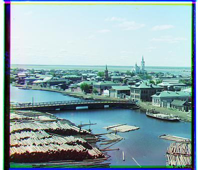

Project One: Images of the Russian Empire - Colorizing the Prokudin-Gorskii photo collection
Background
Sergei Mikhailovich Prokudin-Gorskii (1863-1944) was a man well ahead of his time. With the Tzar's special permission, he travel across the vast Russian Empire to take color photographs of everything he saw. His idea was simple: although there was no way to produce a color image in his day, record three exposures of every scene onto a glass plate using a red, a green, and a blue filter. Today we are able to reconstruct his images in color by take the three color filters, extracting the brightness of each filter and aligning them, then displaying the resulting 3D array digitally with color equal to the coressponding RGB value for each pixel.
Approach
In order to colorize Sergei Mikhailovich Prokudin-Gorskii's photos, there are a couple of steps.
First, separate the raw image into 3 parts vertically, each part corresponding to a color filter, then align the red and green filtered images on the blue one.
For smaller images, it is sufficient to search within a small area (around 15 pixels in all directions) for a good matching alignment.
The quality of an alignment can be scored using Normalized Cross-Correlation (NCC) between the frames.
For larger images, this exhastive searching method is infeasible for finding a good alignment in any reasonable amount of time,
as 15 pixels might not even account for one percent of the entire image. Additionally, as the search radius increases, the time to search increases in polynomial time.
Instead, a better method would be to use an image pyrimad: which is a list of the same image, each downsized by a factor of 2.
Before being downsized, the image is first convolved with a blurring kernel in order to avoid aliasing. After creating an image pyrimad,
performing the same aligning fucntion on the coarsest image in the image pyrimad will yield a displacement for a rough estimate of the ideal alignment.
Then, iteratively aligning on finer scaled images, using the previous computed displacement as the new center of search will yield an accurate aligment
while also not needed too much compute. This is because in the align functions after the first one, a smaller search radius is possible because
we already know the ideal alignment is close.
Once an acceptable alignment is found, the color filtered images can be aligned then displayed in color with minial aritifacts.
Images (NCC)
Cathedral - Red displacement: (12, 3) Green displacement: (5, 2)

Church - Red displacement: (58, -4) Green displacement: (25, 4)
Emir - Red displacement: (510, -580) Green displacement: (49, 24)
The original algorithm fails here. It is most likely because the man's robes have a very different pattern when looking at it from either a red, green or blue filter, causing the NCC similarity score to not accurately reflect how aligned the image is. This is solved in the bells and whistles section where a rudimentary edge detector is implemented, better aligning the images.
Harvesters - Red displacement: (123, 14) Green displacement: (59, 17)
Icon - Red displacement: (89, 23) Green displacement: (40, 17)
Italil - Red displacement: (77, 35) Green displacement: (38, 21)
Lastochikino - Red displacement: (75, -9) Green displacement: (-3, -2)
Lugano - Red displacement: (93, -29) Green displacement: (41, -16)
Melons - Red displacement: (178, 14) Green displacement: (81, 10)
Monastery - Red displacement: (3, 2) Green displacement: (-3, 2)

Self Portrait - Red displacement: (176, 37) Green displacement: (78, 29)
Siren - Red displacement: (96, -24) Green displacement: (49, -6)
Three Generations - Red displacement: (111, 12) Green displacement: (52, 14)
Tobolsk - Red displacement: (7, 3) Green displacement: (3, 3)
Addtional Images
Mosque - Red displacement: (70, 11) Green displacement: (25, 10)
Brick Building - Red displacement: (98, -27) Green displacement: (43, -12)
Canal - Red displacement: (47, 48) Green displacement: (28, 24)
Bells and Whistles: Better Features (Edge Detector)
I implemented an edge detector by convolving the color filter arrays with a 3x3 kernel with negative eight in the middle surrounded by all ones. Then, I derived the NCC similarity score from the output of this convolution instead of the raw color filter arrays, improving accuracy of alignment. For exapmle, previously, the emir image was clearly aligned incorrectly, but when using the edge detector algorithm, the resulting image is much clearer.